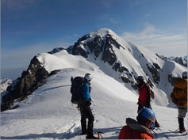

2014年創立から大きなロマンを抱きアルパインスタイルで揺るぎなく、岩壁・岩稜に挑んでいます
We have been challenging rock ridges and walls since our founding 2014 with ambition and alpine style of climing.

モットーは安全第一と徹底した基本第一
我々の仲間は我々仲間で助けるを基本にセルフレスキューを徹底しています
（創立者、元長野県レスキュー隊）
Safety first and thorough basics.
Enforcing self rescue to help our members by ourself.
（Founder, former Nagano prefectual rescue team）
組織について Organization
- 登攀部 Climing division.
- 縦走部：テント泊「登攀部への通り門」 Traverse division.
の2部門で会員定数は25名「登攀部15名・縦走部10名」を限度として
活動活性化を図っています。
Limit of members is total 25(15 for Climing, 10 for Traverse), in order to activate activities.
活動 Activities
- 関西近辺で月に一度ゲレンデ訓練を行っています。
Traning on mountains in Kansai region every mounth. - 毎月会の事務所にて定例会を開催し、山行の報告や打ち合わせを行っています。
Having monthly meeting at the office, reporting activities and plaining. - 1～２か月に1度ぐらいのペースでアルプス方面へ会の山行を実施（山行予定をみてください）
Having activities mostly on Japan Alpine every one or two months. - 土日だけではなく平日にも練習・山行あります。
Having Traning and Activities not only on weekends but also weekdays.
詳しくはメールにてお問い合わせください。
Please email us for further details.
会員の年齢構成 Members age distribution (2018/6/29 23名)
| 男性(Male) | 女性(Female) | |
|---|---|---|
| 20代 | 3名 | |
| 30代 | 3名 | 1名 |
| 40代 | 4名 | 1名 |
| 50代 | 2名 | 5名 |
| 60代以上 | 3名 | 1名 |